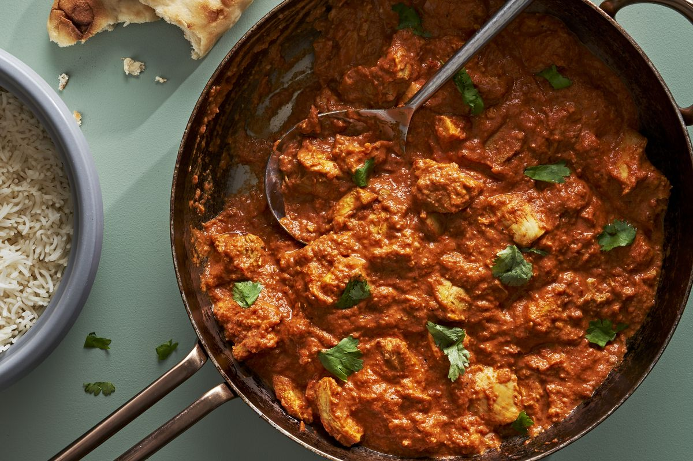

Butter Chicken

This dish is an ideal make-ahead meal, as it actually gets better when it sits. You can make the recipe all the way through, without garnishing, a whole day before, then simply reheat when you’re ready to eat.
ingredients
- 1/2 c. plain or Greek yogurt
- 1 (1") piece ginger, peeled and finely chopped or grated
- 2 cloves garlic, finely chopped or grated
- 2 tsp. garam masala
- 1 tsp. chili powder
- 1 tsp. ground cumin
- 1 tsp. ground turmeric
- Kosher salt
- 2 lb. boneless, skinless chicken thighs, cut into 1 1/2" cubes
- 2 tbsp. neutral oil
steps
- In a large bowl, whisk yogurt, ginger, garlic, garam masala, chili powder, cumin, turmeric, and 2 1/2 teaspoons salt. Stir in chicken and refrigerate at least 1 hour or up to 24.
- In a large high-sided skillet over medium-heat heat, heat oil. Add chicken to pan in an even layer and cook, undisturbed, until golden brown on bottom side, 8 to 10 minutes. Using a slotted spoon, transfer chicken to a bowl